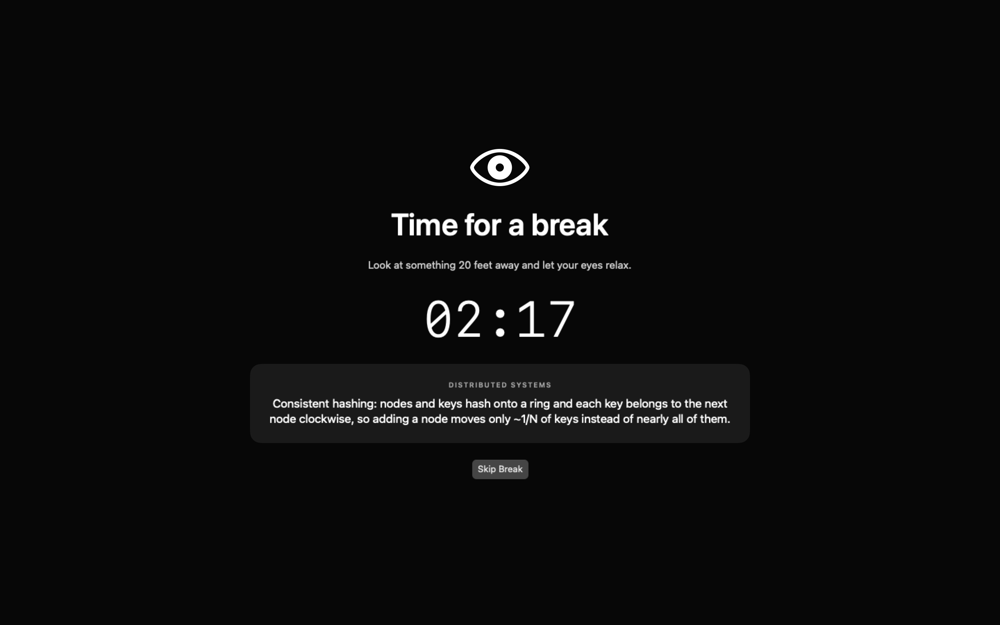

The minimalist macOS eye-care utility that balances 25-min focus with 5-min breaks, prompts you to relax your eyes 20 feet away, dims multi-monitors, and turns forced downtime into high-density system design micro-learning.

When engineers read code or debug complex systems, cognitive fixation suppresses biological reflexes. Here is what peer-reviewed medical literature observes:
Clinical evaluation of IT professionals and software engineers reveals that 82.4% experience Computer Vision Syndrome (burning eyes, blurred vision, ciliary spasms, and tension headaches).
Normal resting blink frequency is 15–20 times/min. During intense screen tasks, blink rates collapse to just 5–7 blinks/min with a surge in incomplete blinks, causing rapid tear film evaporation.
Uninterrupted screen exposure exceeding 4 continuous hours triggers prolonged ciliary muscle contraction without focal release, resulting in cumulative daily ocular and cognitive fatigue.
Farsight is pre-tuned out of the box with 25 minutes of focus and a 5-minute break instructing you to relax your eyes 20 feet away. Durations are customizable from 1 to 180 minutes.
25 min focus · 5 min break · 20 ft rest
Instead of empty downtime, each Farsight break serves a bite-sized architecture card, distributed systems theorem, or legendary quote.
Most timer apps are battery-draining Electron wrappers. Farsight is built from scratch in Swift with native AppKit subsystems.
No Node.js, no Chromium runtime, no 300MB memory footprint. Farsight compiles into a tiny native universal binary with zero background battery impact.
Dual monitors or ultrawides? Farsight creates borderless overlay windows across all connected displays simultaneously at .screenSaver level, preventing you from cheating.
Farsight hooks into Darwin distributed notifications. If you step away for coffee or lock your screen for longer than a break length, it resets seamlessly to a fresh cycle when you return.
Menu bar crowded by other tools? Opening Farsight via Spotlight, Alfred, or Raycast drops a floating menu directly underneath the camera notch so you never lose control.
Pushed a bad commit or paged on PagerDuty during break? Tap Esc to immediately dismiss the overlay and resume work without friction.
Pre-tuned with 25-min focus blocks and 5-min eye breaks. Stepper controls let you customize work (1–180 min) and break (1–60 min) with instant UserDefaults persistence.
Gentle macOS system sounds notify you without annoying sirens: a soft Glass chime announces break time, and a crisp Hero fanfare signals the return to deep work.
No accounts, no analytics, no network permissions requested in Info.plist. Runs 100% locally on your machine forever.
| Feature | Farsight | Electron Timers | Phone / Browser Alarm |
|---|---|---|---|
| Default Cadence | 25m Work / 5m Break | Varies | Manual Set |
| Eye Care Prompt | 20-Foot Gaze Rest | None | None |
| Memory Footprint | < 25 MB | 350 MB+ | Variable |
| Multi-Screen Enforced Dimming | Yes (All Monitors) | Often Single Screen | No |
| Engineering Micro-Learning Cards | Yes (1,000+ CS Tips) | No (Blank screen) | No |
| Sleep & Screen Lock Aware | Yes (System Hooks) | Clock Drift / Broken | No |
| Audio Alerts | Native Glass & Hero | Harsh Synthesized | Loud Ringtones |
| Zero Telemetry & Offline | 100% Offline | Often Tracks Analytics | Depends |
Supports macOS 13 Ventura, Sonoma, Sequoia and newer on Apple Silicon (M1/M2/M3/M4) and Intel.